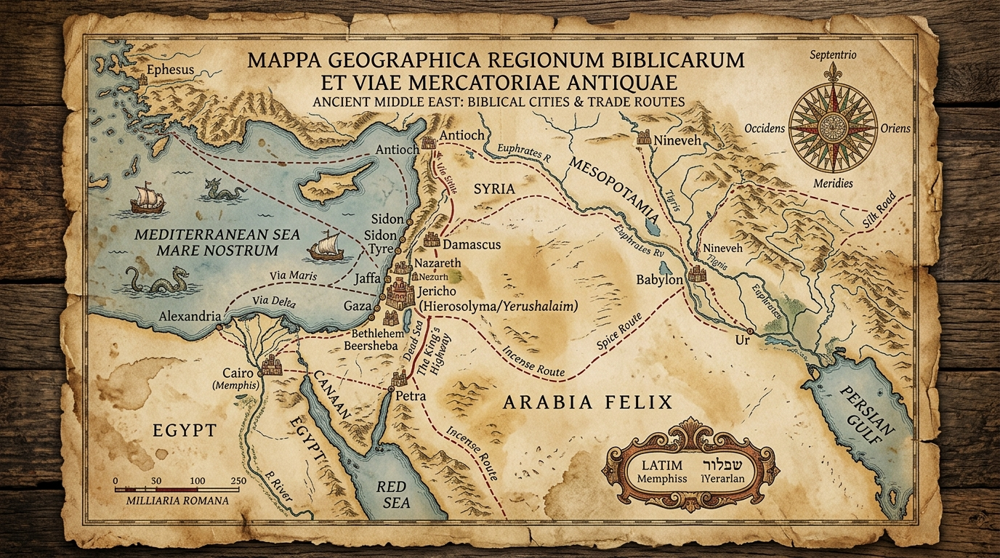

Geografia Sagrada: O Cenário Histórico, Topográfico e Teológico da Revelação Divina
A Bíblia Sagrada diferencia-se de praticamente todas as literaturas sagradas de cunho mitológico ou gnóstico do mundo antigo por um fator absolutamente determinante: ela está profundamente enraizada na realidade tangível do tempo e do espaço geográfico. As Escrituras não situam os seus eventos em "lugares nenhuns" utópicos ou em reinos puramente espirituais e etéreos, mas sim sobre relevos acidentados, vales férteis, desertos áridos, rotas comerciais poeirentas e cidades fortificadas cujas ruínas ainda hoje podem ser escavadas e mapeadas por arqueólogos e historiadores. Para o estudante sério das Escrituras, a geografia não constitui um mero luxo acadêmico ou um ornamento cartográfico dispensável, mas sim uma exigência hermenêutica fundamental e inegociável.
Compreender a topografia do Levante, as variações de altitude entre o Mar Morto e as colinas de Judá, as distâncias reais entre os povoados, as barreiras naturais impostas pelos rios e montanhas, bem como a localização geopolítica estratégica da terra de Israel — situada no exato entcruzar de rotas entre impérios colossais como o Egito, a Mesopotâmia, a Assíria, a Babilônia, a Pérsia e, posteriormente, Roma —, transforma completamente a leitura bíblica. O texto sagrado deixa de ser um registro abstrato de fábulas e passa a revelar-se como a crônica majestosa de como o Criador soberano interviu de forma real na história humana. Este estudo exaustivo examina a cartografia bíblica desde as origens patriarcais na Mesopotâmia até as exaustivas e revolucionárias viagens missionárias do apóstolo Paulo pelo mundo greco-romano.
Índice do Estudo:
- 1. O Crescente Fértil: O Berço Geopolítico da Narrativa Patriarcal
- 2. A Topografia do Êxodo: O Deserto, o Sinai e as Rotas da Provação
- 3. A Divisão de Canaã: Fronteiras Tribais, Relevo e Identidade
- 4. A Geopolítica da Monarquia Unida e Dividida: Israel e Judá
- 5. As Viagens Missionárias de Paulo: A Expansão Global no Mediterrâneo
- 6. Tabela Analítica de Referências Geográficas, Distâncias e Contextos
1. O Crescente Fértil: O Berço Geopolítico da Narrativa Patriarcal
O cenário inicial onde se desenrola a aurora da história bíblica é o célebre *Crescente Fértil*, um vasto arco geográfico de solos aráveis e irrigados que se estende desde as margens do Golfo Pérsico, subindo pelos vales caudalosos dos rios Tigre e Eufrates na Mesopotâmia (região onde floresceu Ur dos Caldeus, berço de Abraão), contornando os contrafortes montanhosos do norte da Síria e descendo pelo corredor costeiro siro-palestino até alcançar o Delta do Nilo, no Egito faraônico. Esta conformação geográfica moldou diretamente o destino das civilizações antigas, pois impedia o avanço direto através do árido Deserto da Síria-Arábia, forçando caravanas comerciais, exércitos invasores e migrantes a seguirem estritamente as margens cultiváveis deste arco.
Do ponto de vista geopolítico, a terra de Canaã ocupava a mais cobiçada e perigosa ponte terrestre de todo o planeta antigo: uma estreita faixa de terra que funcionava obrigatoriamente como o único corredor terrestre viável unindo o Império Egípcio ao Império Mesopotâmico. Ao posicionar o Seu povo escolhido exatamente neste entroncamento rodoviário e comercial das grandes potências mundiais, Deus garantiu que Israel estivesse no centro das atenções internacionais. A fidelidade ou a apostasia de Israel tornavam-se imediatamente visíveis para as nações vizinhas, transformando a geografia de Canaã em um anfiteatro espiritual onde o poder do Deus verdadeiro confrontava constantemente as divindades pagãs dos impérios opressores.
2. A Topografia do Êxodo: O Deserto, o Sinai e as Rotas da Provação
A narrativa do Êxodo e a subsequente peregrinação pelo deserto constituem o evento formacional da identidade nacional e teológica de Israel, cuja compreensão exige uma análise minuciosa da topografia peninsular e desértica. Ao saírem do cativeiro no Delta do Nilo, os israelitas depararam-se com escolhas geográficas decisivas. Evitando deliberadamente a rota costeira militarmente fortificada conhecida como o "Caminho da Terra dos Filisteus" — controlada por fortes guarnições egípcias —, a providência divina guiou o povo rumo ao sul e sudeste, em direção à península do Sinai.
O cruzamento dramático do mar (seja identificado pelo Mar Vermelho tradicional ou pelos pântanos e lagos amargos do istmo de Suez) marcou a ruptura física e jurídica com o poderio do Faraó. A partir de então, o terreno mudou drasticamente para vastidões áridas de planícies de cascalho, wadis sinuosos (vales de torrentes secas) e imponentes maciços de granito escuro na região meridional do Sinai, onde se destaca tradicionalmente o monte Horeb ou Sinai. Esta topografia inóspita e severa não era um erro de navegação divina, mas um laboratório de isolamento e depuração espiritual. Sem fontes naturais de água potável ou agricultura sustentável, Israel foi submetido a uma condição geofísica de dependência absoluta, onde a sobrevivência diária dependia estritamente do maná caído dos céus, da água brotada da rocha e da orientação infalível da coluna de nuvem e de fogo.
3. A Divisão de Canaã: Fronteiras Tribais, Relevo e Identidade
A entrada na Terra Prometida e a divisão territorial entre as doze tribos de Israel, narrada nos livros de Josué e Juízes, refletem de maneira impressionante como a diversidade topográfica de Canaã influenciou o destino de cada clã. A terra de Israel caracteriza-se por uma compacta sucessão de faixas longitudinais paralelas que correm de norte a sul:
1) A *Planície Costeira*, estreita ao norte e mais larga na região dos filisteus e de Saron, caracterizada por solos arenosos e férteis; 2) A *Cordilheira Central* (as colinas de Judá, Benjamim, Efraim e Galileia), um espinhaço montanhoso rochoso e calcário onde se concentraram as principais cidades históricas como Jerusalém, Hebrom, Siquém e Betel; 3) O *Vale do Jordão* (Fenda do Jordão), uma depressão geológica profunda e única no mundo, onde o rio serpenteia até desaguar na bacia fechada e altamente salina do Mar Morto (o ponto mais baixo da superfície da Terra, a mais de 400 metros abaixo do nível do mar); e 4) As *Terras Altas da Transjordânia*, um planalto elevado a leste do vale do Jordão, ocupado pelas tribos de Rúben, Gade e a meia tribo de Manassés. Cada uma dessas zonas moldou a economia, as defesas militares e o isolamento ou abertura cultural das tribos que as habitaram.
4. A Geopolítica da Monarquia Unida e Dividida: Israel e Judá
Com o estabelecimento da monarquia sob Saul, Davi e Salomão, a geografia de Israel alcançou a sua máxima expansão geopolítica, controlando as rotas comerciais cruciais que iam do golfo de Ácaba até o rio Eufrates. A escolha de Jerusalém por Davi como capital político-religiosa foi uma tacada magistral de engenharia geopolítica: situada na fronteira exata entre a tribo de Judá ao sul e a tribo de Benjamim ao norte, a cidade fortificada de Jerusalém (no monte Sião) pertencia neutramente a nenhum dos clãs dominantes, unificando o reino sob uma liderança central e inexpugnável graças às suas defesas naturais em encostas íngremes.
Contudo, após a morte de Salomão e a trágica divisão do reino em duas fações rivais — o Reino do Norte (Israel, com capital em Samaria) e o Reino do Sul (Judá, retendo Jerusalém) —, a vulnerabilidade geográfica tornou-se evidente. O Reino do Norte, desprovido de barreiras naturais intransponíveis e cruzado por rotas de invasão, sucumbiu primeiramente à sanha imperial da Assíria em 722 a.C., tendo sua população deportada. O Reino do Sul, protegido de maneira mais robusta pelas colinas acidentadas de Judá e pela fortaleza de Jerusalém, resistiu por mais de um século, até ser finalmente sitiado e destruído pelas forças babilônicas de Nabucodonosor em 586 a.C., comprovando que nenhuma vantagem topográfica substitui a retidão moral e espiritual diante de Deus.
5. As Viagens Missionárias de Paulo: A Expansão Global no Mediterrâneo
Nas páginas do Novo Testamento, o foco cartográfico desloca-se radicalmente do estreito corredor palestino para a vastidão do Mar Mediterrâneo e as grandes redes de estradas pavimentadas do Império Romano (como a *Via Egnácia* e a *Via Ápia*). Movido pelo ímpeto evangelístico do Espírito Santo, o apóstolo Paulo empreendeu suas lendárias viagens missionárias conectando províncias cruciais: Síria, Chipre, Galácia, Macedônia, Acaia e Ásia Menor.
Mapear as três viagens de Paulo, bem como sua penúltima viagem náutica rumo a Roma como prisioneiro, revela o engenho da infraestrutura romana a serviço da propagação do Evangelho. Cidades portuárias estratégicas e cosmopolitas como Antioquia da Pisídia, Éfeso, Filipos, Tessalônica, Atenas, Corinto e Roma tornaram-se os polos nevrálgicos de onde a mensagem cristã irradiou para o mundo ocidental. A geografia marítima do Mediterrâneo, marcada por perigos de tempestades sazonais e naufrágios dramáticos (como o narrado detalhadamente em Atos 27 na ilha de Malta), testifica que a expansão da Igreja cristã primitiva ocorreu superando barreiras geográficas e culturais intransponíveis, cumprindo literalmente a ordem de Cristo de ser testemunha até os confins da Terra.
6. Tabela Analítica de Referências Geográficas e Distâncias
| Região ou Marco Geográfico | Extensão ou Localização Topográfica | Relevância Histórica e Teológica nas Escrituras |
|---|---|---|
| De Dã a Berseba | Aprox. 240 quilômetros de norte a sul | Expressão idiomática que demarca a extensão territorial total unificada de Israel. |
| Vale do Jordão / Mar Morto | Depressão tectônica a mais de 400m abaixo do nível do mar | Cenário do batismo de Jesus, travessias milagrosas e o Vale da Arábia. |
| Monte Sião (Jerusalém) | Cordilheira central de Judá a cerca de 750m de altitude | Capital espiritual, sede do Templo e o coração da monarquia davídica. |
| Bacia do Mediterrâneo | Rede de rotas marítimas entre o Levante, Grécia e Itália | O grande palco das viagens missionárias paulinas e da expansão da Igreja gentia. |
💡 Aplicação Prática: A História Real Onde Deus Agiu
Estudar a geografia e os mapas da Bíblia liberta-nos de uma visão pietista abstrata que enxerga as Escrituras como uma coletânea de lendas alegóricas descoladas da realidade. Cada vale percorrido pelos patriarcas, cada deserto atravessado pelos hebreus sob a liderança de Moisés, cada colina fortificada conquistada pelos juízos e reis, e cada porto perigoso navegado pelo apóstolo Paulo lembram-nos de uma verdade incontestável: o nosso Deus atua de maneira concreta, física e soberana na história humana real.
Que a clareza topográfica e espacial da Palavra inspire em nós um estudo ainda mais profundo, dedicado e reverente. Saber que o Criador do universo inseriu o Seu plano eterno de redenção em coordenadas geográficas precisas fortalece a nossa certeza de que a Sua fidelidade atravessa os séculos, alcançando diretamente o nosso tempo, a nossa vida e o nosso coração com a mesma exatidão com que guiou os passos dos antigos profetas e apóstolos.
Navegação rápida:
- Voltar ⬅️ Voltar para Material
- Próximo Estudo ➡️ 2. Arqueologia Bíblica
Apoie este projeto 🌱
Se este estudo foi útil, considere apoiar a manutenção do site.
Chave PIX (Celular):
marcosmontanaria@gmail.com